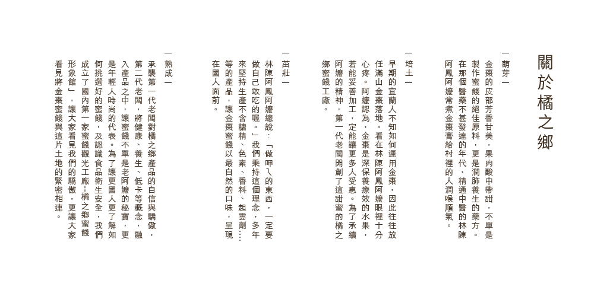

橘之鄉風光
每一次，當我們從遊客的口中聽見：「到宜蘭，一定要去橘之鄉」；「買金棗蜜餞當伴手禮，當然找橘之鄉」；「橘之鄉是宜蘭不可錯過的私房景點」......時，心中總會升起小小的滿足與驕傲！
2010年，橘之鄉在全體工作人員的努力下，換上了新裝。
想喝咖啡，請到可媲美偶像劇拍攝現場的AGRIOZ；
想了解蜜餞產程，請到我們全透明的蜜餞工廠參觀迴廊；
想體驗蘭陽文化，請到吉箱工坊DIY；
想購買最精緻可口的伴手禮，請到我們的形象館......
想給自己一個難忘的假期與美麗的回憶，請到橘之鄉！
只用台灣水果，就在這裡製作，有認證的優良製程，加入甜蜜夢想，給你幸福的滋味 !
交通方式
台北＆礁溪→橘之鄉
花蓮＆蘇澳→橘之鄉
GOOGLE地圖